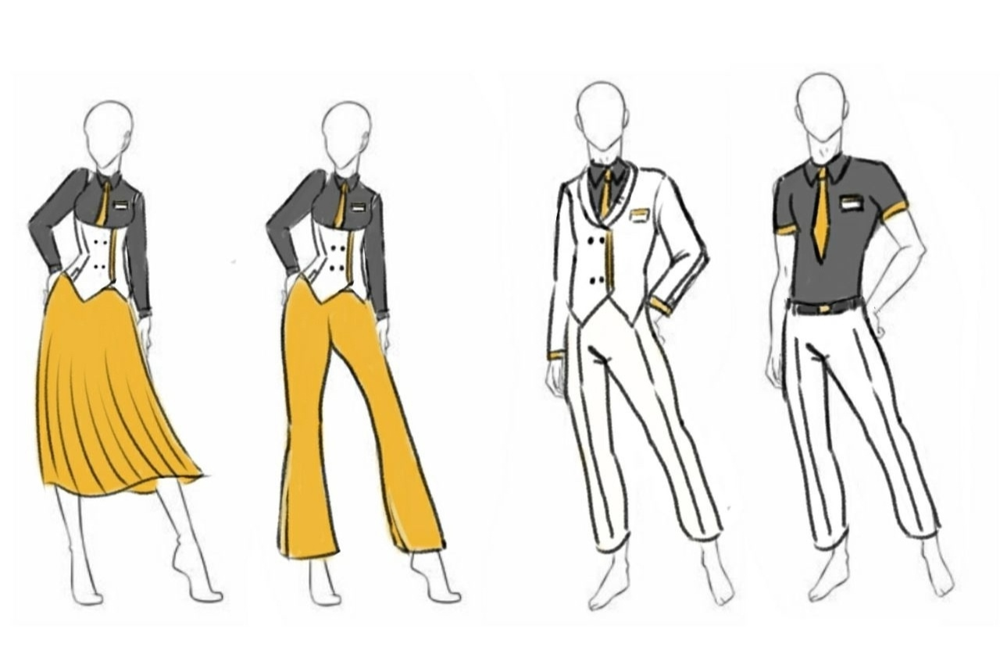

Устав Компании
-
Общие положения
Для сотрудников
- Уважительно относиться друг к другу;
- В рабочее время не заниматься делами, не связанными с выполнением служебных обязанностей;
- Не демонстрировать коллегам свое плохое настроение;
- Не сквернословить (но в меру можно), не проявлять несдержанность и агрессию;
- Всегда извиняться за свое некорректное поведение;
- Помогать коллегам, делится знаниями и опытом;
- Не обсуждать личные или профессиональные качества коллег в их отсутствие;
- Быть вежливыми и корректными;Для клиентов
- Относиться уважительно как к сотрудникам банка, так и к другим клиентам. Запрещена дискриминация по полу, возрасту, ориентации, цвету кожи;
- Неконструктивная критика скилла/стиля в комментариях запрещена. Сначала предупреждение, затем — бан; -
Правила приема на работу
Требования к резюме
- Шаблон резюме должен быть заполнен полностью и на русском языке.
- В контактах указывается ссылка на вашу страницу ВК/Telegram и вашу группу/tgc.
- Пункты резюме 7 и 8 требуют к написанию, как минимум, трех компетенций.
- Пункт резюме 9 подразумевает краткое перечисление самых важных знаний, навыков и опыт решения профессиональных задач, которыми вы располагаете. Если ваши компетенции крайне разнообразны, пишите лишь о том, что поможет вам получить желаемую должность. Можно рассказать о вашем опыте, пройденных курсах или хобби. Главное правило этого раздела — уместность. Не стоит писать все подряд, постарайтесь рассказать о себе то, что станет финальным аргументом «за».
- К резюме в обязательном порядке прикладывается фотография — приветствие — оно должно быть выполнено качественно, в виде полноценной работы, как минимум, по пояс.
- Если вы рисуете в традишнле, то ваш рисунок следует выполнить аккуратно и в цвете, он также должен быть хорошо сфотографирован или отсканирован. Разрешено кидать фото в документе с более хорошим качеством. Скетчи на листах в клетку/линейку не принимаются.
❗ Использование нейросетей в своих рисунках строго запрещено. За подобное сразу бан.
Администрация имеет право в случае сомнения запросить доказательство вашего авторства рисунка (этапы рисования, спидпейнт и тд).Униформа
Если Вы хотите прийти на должность специалиста по обслуживанию клиентов, клиентского менеджера, операциониста и подобных вакансий, то необходимо соблюдать дресс-код компании.
Униформа представляет из себя:
— Для женщин: темный верх (с коротким/длинным рукавом в зависимости от сезона), желтый галстук, белая жилетка и желтый низ (юбка/штаны по желанию).
— Для мужчин: темный верх (с коротким/длинным рукавом в зависимости от сезона), желтый галстук, белый костюм.
— Шорты и слишком короткая одежда не допустимы, обязательно ношение бейджика.
— В обуви должны быть закрыты пальцы и пятка.
— Прическа. Длинные волосы должны быть чистыми и опрятными, собранными в хвост или любую другую прическу. Борода и усы должны быть аккуратно подстрижены и причесаны.
Для должностей в офисе, не работающих напрямую с клиентами, соблюдение дресс-кода не требуется. Однако одежда в цветах компании очень приветствуется!
Кого мы не принимаем
— родственников и друзей семьи Апокалипсис (Рен, Отто)
— родственников любых других NPC и персонажей отвечающих без согласования с отвечающими и администрацией аска
— существ/людей/етс со сверхспособностями, не вписывающиеся в сеттинг лора*
*Допускаются иные расы и виды с сохранением незначительных умений/сил/качеств (долголетие эльфов, антропоморфные существа, особенности животных, etc.) после обсуждения с администрацией.Обязательно обсуждается с администрацией
— Родственные связи с существующими персонажами должны быть подтверждены и обоснованы (если два чела идут за брата и сестру, а не так, что кто-то к кому-то присосался внезапно).
— Родственники несуществующих персонажей. Такие персонажи подразумевают, что у человека будет две роли. Это тонкий индивидуальный случай, поэтому рассматриваем в индивидуальном порядке.Подача резюме
После заполнения анкеты и отрисовывания приветствия, Вам необходимо подать документы в нашего чат-бота (личные сообщения), после чего в течении пары часов с Вами свяжется анкетолог, который проверит анкету.
❗ Проверка может занимать срок более 3-х дней, но не больше 7-ми дней. Если Вашу анкету не проверяют более 7 дней, то отпишитесь в личные сообщения руководителей отделов (администрации).
Администрация имеет право отказать в принятии анкеты без объяснения причины.
В случае отсутствия ошибок, Вас добавляют в рабочий чат и общий новостной чат. Нахождение в рабочем чате по вашему желанию. В новостном — обязательное. -
Для сотрудников
Общее
- Прежде, чем отправлять ответ на стену, нужно залить его в соответствующий альбом.
- При публикации ответа в традишке или в дидже следует учесть то, что Ваш почерк должен быть понятным и читабельным.
- В посте должен быть тег персонажа.
- При отпуске без сохранения заработной платы или увольнении Вы должны предупредить об этом написать заявление, тем самым предупредив начальство.
- Ответ должен быть минимум раз в 2 месяца. Если за это время от отвечающего нет ни одного ответа, то ему даётся дополнительные 5 дней на отрисовку. Если же и за это время ответа нет, то администрация убирает его с роли.
- Ответы 18+ допустимы лишь с цензурой.Система дедлайна
Дедлайн составляет 2 месяца, итоги подводятся строго 2 января, 1 марта, 2 мая, 1 июля, 2 сентября и 1 ноября.
Условия закрытия дедлайна:
- Норма: один полноценный ответ в альбоме персонажа или два флешмоба.
- Флешмобами без полноценных ответов можно закрыть дедлайн лишь дважды подряд.
При просрочке дедлайна отвечающему дается предупреждение. При повторной просрочке — исключение из отвечающих.
Для администрации доступна отсрочка дедлайна на три месяца (итого 5 вместо двух).Система мотивации
За превышение нормы начисляется внутриасковая валюта Аура (AUR): 25 AUR за флешмоб и 50 AUR за ответ.
Каталог премиум-услуг -
Приложение
Структура компании
#Новости@askbank
#Приём_на_работу@askbank
#Увольнение@askbank
#Корпоратив@askbank
#Сотрудничество@askbank
#День_Рождения@askbank
#Тимбилдинг@askbankКорпоративные мероприятия
#Halloween@askbank
#Свитерки@askbank